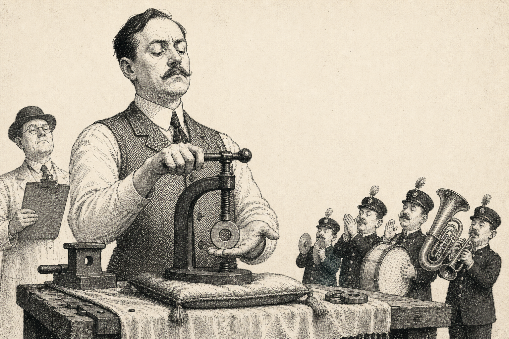

LIFE / THE PRACTICAL UNPRACTICAL
How to Become a
Master Flanger
A fifty-part course in the ancient and increasingly regulated art of making a washer feel important.
Important notice: flanging is not a recognised health intervention. It is, however, a recognised way of making a small metal ring look busy. Consult a qualified professional before consulting a flange.

Part 1, in which the washer is introduced to ceremony.
Fifty parts. One washer. No sensible exit.
Begin with the alleged health benefits, proceed through the testimonies of citizens who have seen the light reflected off a flange, and finish with FAB: Flanging for Absolute Beginners. The course is self-paced, provided you pace yourself in a circle.
You are now a master flanger.
Unless you skipped Part 43, in which case you are a person holding a washer near a vice. This is still a promising start. Your certificate is printable, non-transferable and not accepted by any institution except the Institute of Flange, which is a cupboard in Leith.